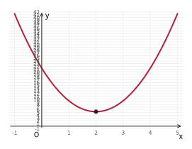
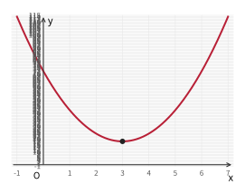
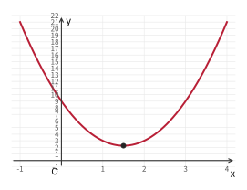

ホーム ＞ 数学II ＞ 積分法（定積分・面積）
別冊練習問題 10 の解答 積分を含む関数 F(a) の最小
(1) 定数 \(a\) に対して \(F(a)=\displaystyle\int_0^{4}(x-a)^2dx\) とおく。\(F(a)\) を最小にする \(a\) と、そのときの最小値を求めよ。
積分を計算
\[F(a)=\int_0^{4}(x-a)^2dx=\left[\dfrac{(x-a)^3}{3}\right]_0^{4}=4 a^{2} - 16 a + \dfrac{64}{3}\]
平方完成
\[F(a)=4 a^{2} - 16 a + \dfrac{64}{3}\]\[=4\left(a-2\right)^2+\dfrac{16}{3}\]

最小
\(a=2\) のとき最小値 \(\dfrac{16}{3}\)。
【答案】
\[a=2,\ \text{最小値 }\dfrac{16}{3}\]答
(2) 定数 \(a\) に対して \(F(a)=\displaystyle\int_0^{6}(x-a)^2dx\) とおく。\(F(a)\) を最小にする \(a\) と、そのときの最小値を求めよ。
積分を計算
\[F(a)=\int_0^{6}(x-a)^2dx=\left[\dfrac{(x-a)^3}{3}\right]_0^{6}=6 a^{2} - 36 a + 72\]
平方完成
\[F(a)=6 a^{2} - 36 a + 72\]\[=6\left(a-3\right)^2+18\]

最小
\(a=3\) のとき最小値 \(18\)。
【答案】
\[a=3,\ \text{最小値 }18\]答
(3) 定数 \(a\) に対して \(F(a)=\displaystyle\int_0^{3}(x-a)^2dx\) とおく。\(F(a)\) を最小にする \(a\) と、そのときの最小値を求めよ。
積分を計算
\[F(a)=\int_0^{3}(x-a)^2dx=\left[\dfrac{(x-a)^3}{3}\right]_0^{3}=3 a^{2} - 9 a + 9\]
平方完成
\[F(a)=3 a^{2} - 9 a + 9\]\[=3\left(a-\dfrac{3}{2}\right)^2+\dfrac{9}{4}\]

最小
\(a=\dfrac{3}{2}\) のとき最小値 \(\dfrac{9}{4}\)。
【答案】
\[a=\dfrac{3}{2},\ \text{最小値 }\dfrac{9}{4}\]答